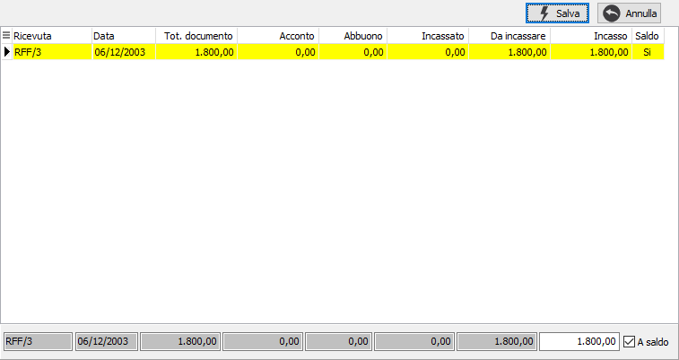

Evasione ricevute fiscali
L'evasione di ricevute fiscali si ha solo nel caso in cui si stia compilando una ricevuta fiscale con una causale che prevede Ricevute di incasso.

Nella finestra sono presenti i riferimenti alle ricevute fiscali contabilizzate, da incassare. Per selezionare oppure annullare la selezione di un rigo è sufficiente fare doppio clic con il mouse sul rigo interessato (se selezionato verrà annullata la selezione altrimenti il contrario). È anche possibile utilizzare il menù attivato tramite la pressione del tasto destro del mouse, oppure utilizzare gli appositi tasti funzione. È consentito selezionare o deselezionare un solo rigo oppure tutte le righe presenti nella selezione. Si possono effettuare incassi parziali in conto oppure a saldo.
Se un rigo viene evaso completamente lo sfondo appare di colore giallo chiaro. La pressione sul pulsante Esegui determina l'inserimento dei dati selezionati nel documento.